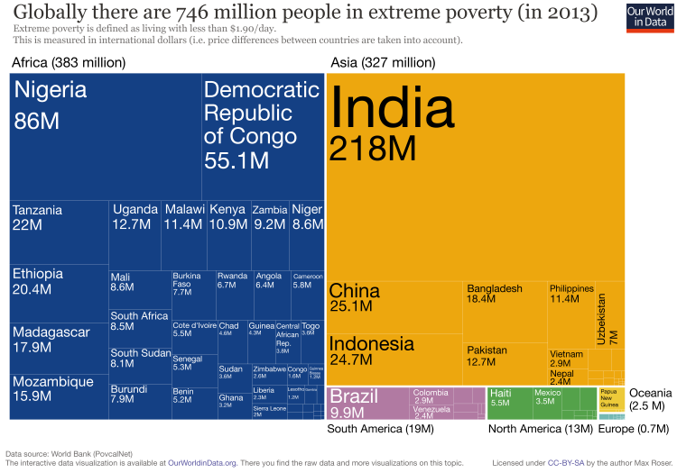
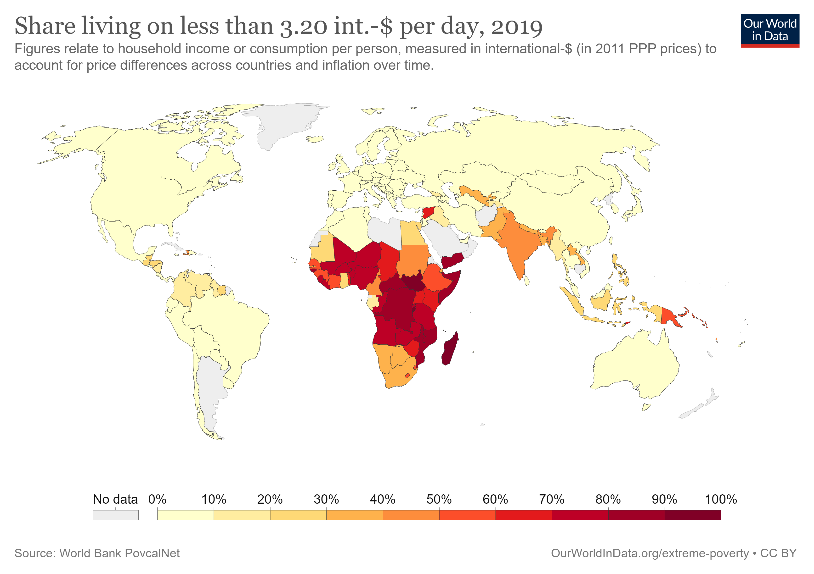
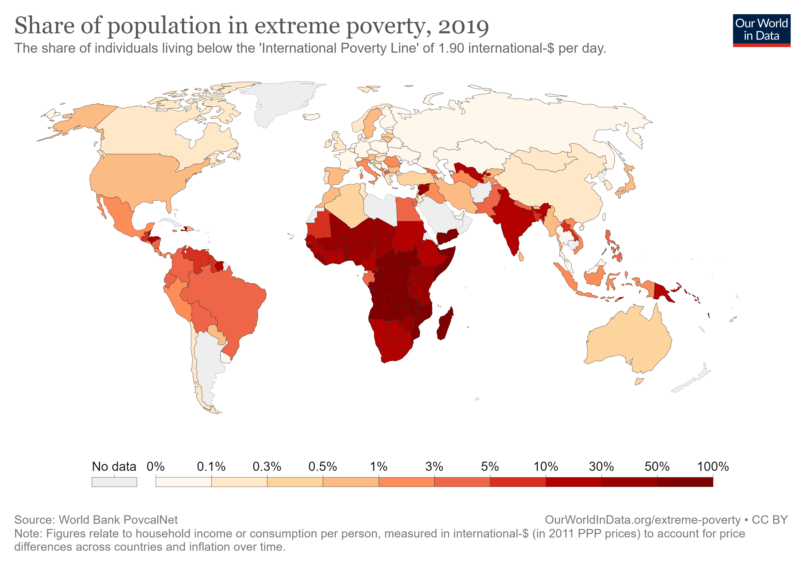

Poverty Around the World
The global prevalence of extreme poverty has decreased from about 100% in the nineteenth century to 10.7% in 2013. While this is a significant success, there is no need to be complacent: a poverty rate of 10.7% means 746 million people are living in poverty. What does it look like on the map? Out of the 746 million people, 383 million of them live in Africa, 327 million in Asia, 19 million in South America, 13 million in Oceania, and 0.7 million in Europe.


Share of Population Living in Poverty, 2019
The World Bank reports poverty headcount ratios using a higher line at 3.20 int-$. The map shows available estimates.

Share of Population in Extreme Poverty, 2019
The World Bank defines extreme poverty as living on less than 1.90 int-$. The map shows available estimates of the extreme poverty headcount ratio, country by country.